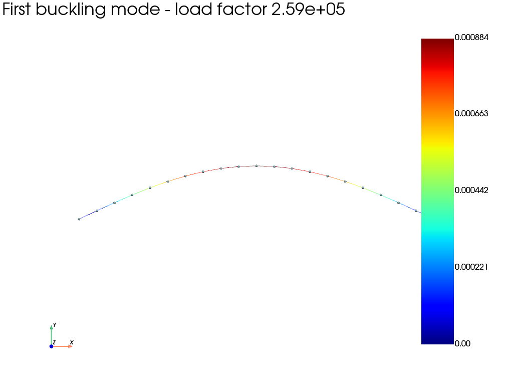

Note
Go to the end to download the full example code.
Linear buckling of a pinned beam
This example predicts the critical compressive loads and buckling modes of a straight elastic beam. Linear buckling is a perturbation analysis performed about a preloaded reference state. Fedoo solves
where \(\mathbf{K}_M\) is the material stiffness, \(\mathbf{K}_G\) is the geometric stiffness generated by the reference stress, and \(\lambda\) is a critical load factor.
import numpy as np
import fedoo as fd
Geometry and beam properties
A one-metre-long circular beam is discretized with 20 linear beam elements. Both ends are pinned for transverse motion, while the left end also prevents rigid-body translation along the beam axis.
fd.ModelingSpace("2D")
length = 1.0
young_modulus = 210e9
radius = 0.02
material = fd.constitutivelaw.ElasticIsotrop(young_modulus, 0.3)
properties = fd.constitutivelaw.BeamCircular(material, radius, k=0.5)
mesh = fd.mesh.line_mesh(
n_nodes=21,
x_min=0.0,
x_max=length,
elm_type="lin2",
ndim=2,
)
weakform = fd.weakform.BeamEquilibrium(properties, nlgeom=False)
assembly = fd.Assembly.create(weakform, mesh)
Reference preload
The geometric stiffness depends on the current stress state, so a preload problem must be solved first. A linear static problem is sufficient here because the reference response is linear. A nonlinear problem could instead supply the preload when the reference equilibrium requires it.
The reference compressive force is one newton. Consequently, the buckling load factors obtained below also equal the critical forces in newtons.
left = [0]
right = [mesh.n_nodes - 1]
preload = fd.problem.Linear(assembly)
preload.bc.add("Dirichlet", left, ["DispX", "DispY"], 0.0)
preload.bc.add("Dirichlet", right, "DispY", 0.0)
preload.bc.add("Neumann", right, "DispX", -1.0)
preload.solve()
Linear buckling problem
LinearBuckling uses the assembly and state variables of the preload
problem. Its boundary conditions describe perturbations about that state
and must therefore be homogeneous. As for modal analysis, the registered
output contains one frame per buckling mode.
buckling = fd.problem.LinearBuckling(preload)
buckling.bc.add("Dirichlet", left, ["DispX", "DispY"], 0.0)
buckling.bc.add("Dirichlet", right, "DispY", 0.0)
results = buckling.add_output("buckling_modes.fdh5", assembly, ["Disp"])
buckling.solve(n_modes=3)
print("Critical load factors:", buckling.load_factors)
# For comparison, Euler's analytical load for a pinned-pinned beam is
# pi**2 E I / L**2.
second_moment = np.pi * radius**4 / 4.0
euler_load = np.pi**2 * young_modulus * second_moment / length**2
print(f"Euler critical load: {euler_load:.6g} N")
Critical load factors: [ 259125.77454687 1021031.96228643 2242455.06855579]
Euler critical load: 260453 N
Plot the first buckling mode
Eigenvectors have an arbitrary amplitude. We scale the first one to display
a maximum deflection equal to 15% of the beam length, then use the standard
fedoo.DataSet plotting interface to draw the deformed beam.
results.load(0)
max_displacement = np.max(np.linalg.norm(results["Disp"], axis=0))
display_scale = 0.15 * length / max_displacement
results.plot(
"Disp",
component="norm",
iteration=0,
scale=display_scale,
show_edges=True,
show_nodes=True,
title=f"First buckling mode - load factor {buckling.load_factors[0]:.3g}",
)

Total running time of the script: (0 minutes 0.279 seconds)